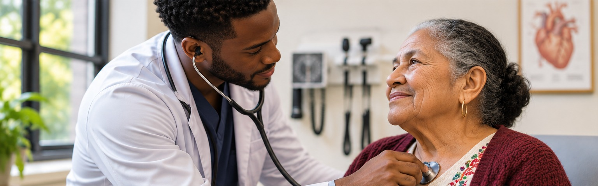

Understanding the human body
Accessible explorations of anatomy, physiology, disease, and the science behind medical care.

An independent exploration of medicine, scientific inquiry, and the people behind every diagnosis and discovery.
Because Medicine Is a Human Right.
Accessible explorations of anatomy, physiology, disease, and the science behind medical care.
Questions about access, equity, responsibility, and the human experience of health.
Original articles and reflections will appear here as they are written and published.
A place to document educational experiences and questions that lead to further investigation.
Service activities and reflections on the practical meaning of caring for others.
Future original photographs, interviews, and video projects will be featured here.
Let’s Medicine is an independent, student-led educational initiative founded by Calvin Zion Brown-Fernandez. It is a space for curiosity, rigorous learning, thoughtful questions, and a belief that medicine should serve humanity.
As the publication develops, it will feature Calvin’s original writing, educational projects, and reflections on the relationship between science and society.
The clinical photograph on this website is an illustrative image, not documentation of an actual patient encounter or a representation of the founder as a physician. Educational content is not medical advice.